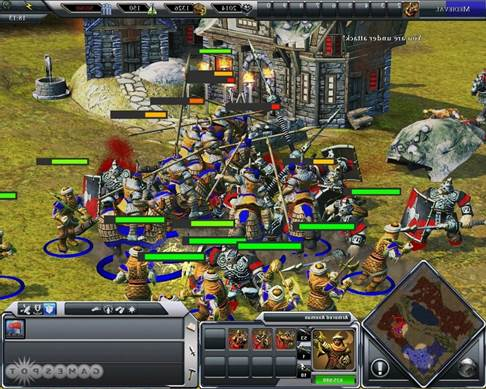
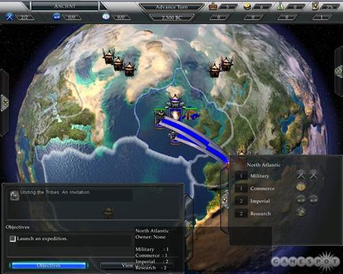
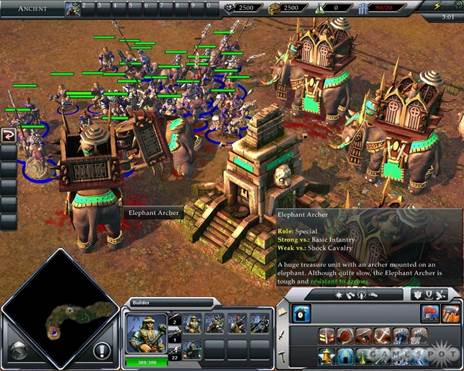
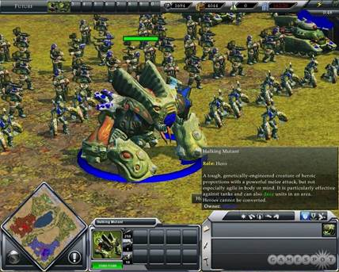

A lot of RTS gamers have been clamoring for a simplified Empire Earth over the past couple of years, finding the first two releases in the series to be a mess of units and eras as incomprehensible as a history textbook after it's been fished out of a blender. So, welcome to Empire Earth III, a shot back at the critics that answers complaints by dumbing the whole game down to utter dreck. While the first two games in the series at least inspired love or hate, this new arrival is so "blah" that it can only elicit a lot of "What the hell happened here?" shrugs.

All of the foppish voice samples don't exactly fit in with the crazed, bloody melee combat. Although it is gratifying to see the jokers bragging about camel farts turned into red smears on the landscape.
Still, the design is more misguided than flat-out awful. Developer Mad Doc Software probably started from a good place, working with the sensible idea that a lot of the messy cross-epoch elements needed to be stripped away for the franchise to truly compete with the likes of its Rise of Nations and Age of Empires rivals. To accomplish this, the designers scrapped the old individual civilization model and moved to a different route where you guide world regions. Instead of picking the British, the Persians, the Americans, or the like for campaign play, you choose a side from Western, Middle Eastern, and Far Eastern empires that encompass basic stereotypes of their cultures. So the Westerners are all about research and expensive, high-quality units. The Easterners deal in huge numbers of infantry. And the Middle Easterners specialize in cavalry and hit-and-run tactics. You can get past these generalities only by playing skirmish mode against the computer or against other human players online and selecting from handfuls of more traditional nations like the US, North Korea, Switzerland, and Russia, and even then these sides don't really differ from the others in their regional blocs.
This concept gets across an imperial theme quite nicely, but it also simplifies things too much. Basically, the standard dozen or so civs typically tricked out with all sorts of varied units and specialties have been swapped out for what amounts to a measly three of them that play a lot like one another anyhow. West and East are structured similarly, with builders constructing traditional Western city centers and Eastern ministries, warehouses, barracks, stables, and so forth. Only the Middle East stands out somewhat, and this is mostly just for portable buildings that can be unpacked without the assistance or any sort of worker unit. You need to get into the future era to notice anything interesting with these sides, as that's when you start seeing ideas like the Middle East's cloaked factory and camouflaged revolutionary guard, and the East's bioengineered units like the supersoldier and hulking mutant. Despite these variances, the styles of play are nearly identical no matter what part of the globe your empire calls home. You need to make accommodations for the blatant specialties noted in the paragraph above (which basically means you need to build cavalry with the Middle Easterners, research a lot of tech with the Westerners, and crank out the infantry with the Easterners), but aside from that this is all about the same old base building, resource gathering, and army rushing.
Much of the new world-domination mode of play feels equally tired. Mad Doc has swiped a page from the Big Huge Studios playbook that the developer used to make Rise of Nations, dropping the typical scripted campaign for a freeform option where you try to conquer the globe. It plays as a cross-genre experiment, with you making moves on a global map in turns and then seeing how they play out in real-time skirmish maps. The only problem is that it's all incredibly bland. Provinces are designated as imperial, economic, military, or research sites based on the amount of each turn-based resource that the region produces (you actually make this formal designation, but there generally isn't much choice since you're given set numbers for each category), but there is nothing to characterize these areas. You don't get to hear that, say, Southern Europe is a great conquest because of its fertile farms and philosophical Greeks; you just see that the province gets good numbers across the board. The only plus is being able to custom-outfit your civilization with various imperial, economy, and commerce world techs like roads and infrastructure, supply lines, and superior intel. You get to directly play most of these techs on provinces, too, which gives you a feeling of actually developing an empire.

Look familiar? The main world-domination mode of play is a straight riff on Rise of Nations. It copies this design right to the letter. Well, save for the 'good' part.
Still, most of your time is spent in repetitive conquests of provinces occupied by minor tribes drawn from all of history. These battles cannot be auto-resolved as can scraps with the other empires in the game, so you spend an incredible amount of time building the same base and army to slaughter the same packs of heathens over and over again. Objectives are a bit varied in that you often hook up with tribal allies or need to win over a new friend by doing him or her a favor, but they pretty much always come down to you needing to build a big army to wipe somebody out.
Artificial intelligence provides little challenge in these engagements. Enemies put together reasonable bases, yet never seem to build reasonable armies or attack you in more than a halfhearted fashion. Take a little time to build even a middling force and you'll be able to stomp all over most maps unopposed--if you can find the bad guys, that is. Map design incorporates some of the most irritating land features ever seen in an RTS. It's as if you're navigating narrow corridors, not forests and plains. Valleys, cliffs, and rivers impede your progress everywhere, forcing you to patrol every square inch of maps to find enemy settlements. Horrific pathfinding makes these explorations even more annoying. Armies hiccup in place whenever you issue new movement commands and are so dumb that they can get hopelessly stuck if you ask them to turn around in a tight spot like a dead-end valley.

How these elephant archers got into ancient Western Europe, we'll never know.
Everything in world-domination campaigns is also mixed up when it comes to time and place. You start in the proper geographic location for your civilization, but nobody else seems to be in their proper places. So if you begin a campaign as the West, you kick off your conquering in ancient Western Europe. So far, so good. But then you can immediately encounter an Olmec tribe in Britain, an Asian settlement in the vicinity of Spain, and Knights Templar guarding a lost tomb next to a pack of elephant archers in what appears to be Germany. So much for the global scope and historical realism; the game seems to be even more of an historical mash-up then any other RTS.
Mix-ups are also common with unit types. As with previous Empire Earth games, units are often jumbled together from various eras. Here, however, this tendency seems even more pronounced due to the use of just five eras (ancient, medieval, colonial, modern, and future). It's common to find all sorts of bizarre units marching side by side. So if your sensibilities are offended by troops wielding Gatling guns and arquebuses on the same battlefields, give Empire Earth III a pass. If this isn't enough to turn off armchair historians, numerous goofy units with no basis in reality should certainly do the trick. The Middle Easterners are probably the biggest offenders here, with camels that can lay a hurting on enemies due to a special stench attack and a hero prophet unit that can call forth a plague of frogs. While there is a place for such units in an RTS, they don't fit in a game seemingly designed to be a more serious, more authentic take on conquering the globe.
The developer's questionable sense of taste and humor is also on display in the visuals and sound. The overall graphic design of the game leans toward the cartoonish, with a brightly colored palette that often renders units in pastel hues more appropriate for a teen girl's bedroom décor than an army's. This at least helps make buildings distinctive, as splashes of color let you tell one civilization's settlement from another at a glance. Of course, there are basically only three of them, so it's not like you've got a lot of architectural styles to memorize. The audio component of the game soars well past cartoony and into stupid. Units acknowledge orders with nothing but cheap jokes. Knights make snarky little comments about "being right behind you…way behind you," and usabari camel riders crack jokes such as "I am like a camel fart--loud and dangerous." As you can tell by these winning examples, the lines in the game aren't funny. And they're much less amusing after you've been forced to listen to them a few hundred times over the course of a skirmish. Troops seem to get stuck like skipping records at times, too, and often incessantly repeat the same dialogue every time you issue a move command. This just makes a bad situation even worse.
B
izarre future units like the East's genetically altered hulking mutants and supersoldiers add character, if not credibility, to later game battles.
We could get into the derivative, buggy multiplayer, the frequent crashes, and the demanding system requirements that bring a Crysis-conquering system to its knees, but what's the point? Earlier Empire Earth games were acquired tastes that not everybody liked. Now, in an attempt to reach out to the masses, the developer has given us a game that nobody will like. The first two releases in the series were overwhelming, but they're apt to inspire fond memories in anyone who makes the mistake of picking up this lame new sequel.